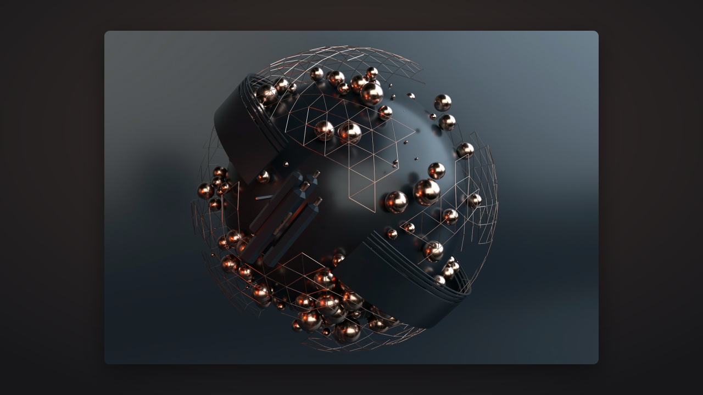

Story before technical explanation
The lifecycle became the primary narrative device, so visitors understand the concept visually before reaching deeper technical information.
Turning a technical battery-revival process into a visual story that makes the lifecycle easier to understand and more engaging.

What happens to a battery after it reaches the end of its life?
Synovra focuses on the lifecycle and revival of lead-acid batteries. The challenge was communicating a technical, industrial process in a way that was understandable, visually engaging and aligned with a premium technology brand.
My role was translating the concept into a visual digital experience: the storytelling structure, a seven-scene lifecycle concept, visual direction, colour system, 3D visual concepts, animation direction and the website interface.
Instead of standard information sections, the experience follows the battery’s journey through its lifecycle — seven scenes from origin to a new life.
The lifecycle became the primary narrative device, so visitors understand the concept visually before reaching deeper technical information.
3D visuals weren’t decoration — they make the battery, energy and transformation process more tangible.
A premium dark foundation with energy-focused accent colours gives a modern technology feel instead of a conventional industrial website.
This project pushed me beyond traditional website layouts — using storytelling, 3D visuals and motion concepts to communicate a technical subject, and exploring how visual design can make complex industrial processes easier to understand.
Want the full walkthrough of this project? Let’s talk